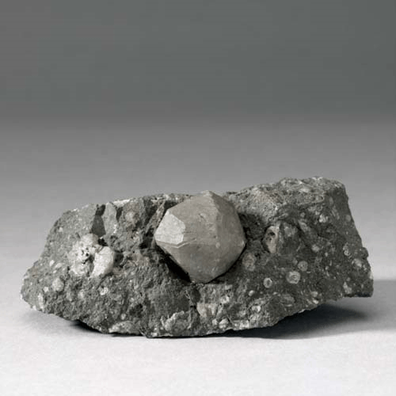
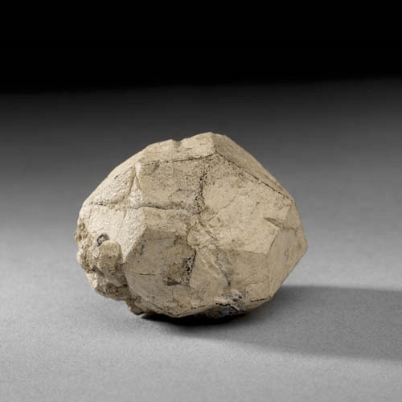
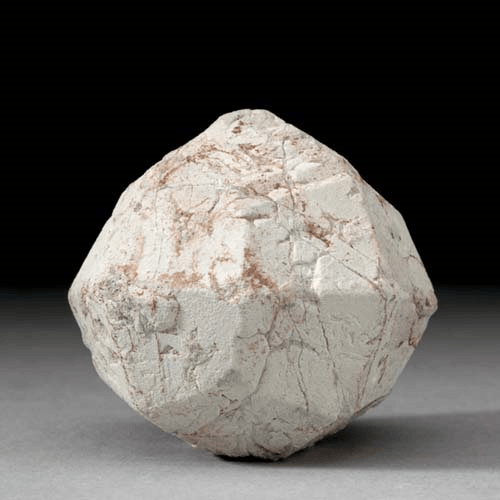

Leucite - KAlSi2O6
Tectosilicates




Habit: White to gray. Commonly euhedral pseudo-cubic crystals, typically showing fine twin striae; also as disseminated grains, rarely granular, or massive. Vitreous luster; transparent to translucent. White streak.
Environment: Occurs in potassium-rich mafic and ultramafic lavas and hypabyssal rocks.
Etymology: From the Greek leucos, meaning "white," in allusion to its color.